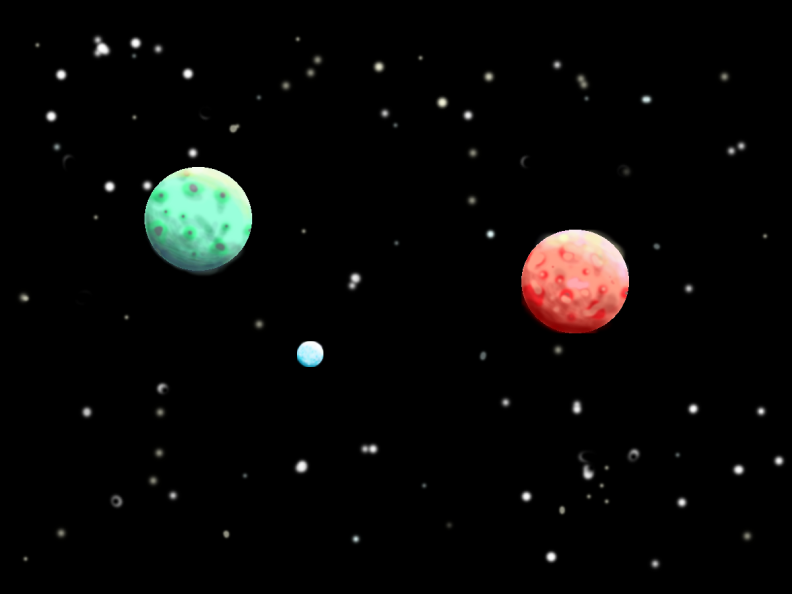

Планета-метеорит
Апрель, 2020
Хоть никто этого не знает, но в космосе есть планета-метеорит. Называется она Смол Камфоя. Она так называется потому, что откололась от большой планеты по названию Камфоя. Произошло это так.  В тысяча девятьсот сорок первом году по направлению к ней мчалась острая как лезвие комета. Она была такая острая, что отсекла от Камфои кусочек, который сразу же попал в притяжение огромной планеты Сируанс и полетел к ней. Но пока он летел, он попал в притяжение такой же как Сируанс планеты по названию Тaкомак и по пути к Сируанс сворачивал в её сторону. Через три месяца метеорит Смол Камфоя влетел в пространство между двух планет, Сируанс и Тaкомак, и остановился. Он влетел между этих планет точно посередине и ни Сируанс ни Тaкомак не могли к себе её притянуть. И теперь Смол Камфоя будет там вечно.
Созвездие Рыбий скелет
Июнь, 2020
Хоть никто этого не знает, но в космосе есть созвездие, носящие название Рыбий Скелет. Это созвездие находится в галактике Старбунсол, и в нём есть кое-что интересное. От всех звёзд Рыбьего Скелета, отваливается очень много кусков, и относительно скоро их не станет - они развалятся на кусочки. Это происходит от того, что у этих звёзд очень маленькое притяжение. Но один такой метеоритный дождь летит по направлению к одной из звёзд Рыбьего Скелета, и если не поминяет направление и они столкнутся, та взорвётся, взорвав другие и может взорвать все соседние системы, а может все взрывы соединятся в один и взорвётся вся вселенная. Остаётся только гадать и ждать пока всё случится.
История Релаксии. Летопись.
Октябрь, 2020
Релаксия - это маленькая страна-полуостров, который находится на Средиземном море и граничит с Францией и Испанией. В Релаксии есть четыре города и два посёлка. Города называются так: Руинск, Город Отдыха, Нью-Лондон. А самый старинный город (столица) называется Ривербург. Посёлки называются так: первый посёлок называется Енотовка, а второй - Ракеткино.
Всё было так. Изначально Релаксия была неоткрытым кусочком земли, и первые люди от 499 года до 505 года переезжали туда из Испании, Франции и Италии и стали строить посёлки и гордились открытой ими землёй. Переселенцы были мирными людьми и ужас как не хотели войну, а хотели, чтобы можно было спокойно отдохнуть, не думая, что сейчас на твою землю ворвётся какое-то войско, и скоро придумали прекрасное название для своей страны: Релаксия - свободная страна, где нечего бояться, что начнётся война.
В 785 году в Релаксии начал появляться городок Ривербург и он уже граничил с морем и с центральным в Релаксии озером Филимаст. И уже есть Енотовка где много енотов. Но в 800 году в Релаксию пришёл один человек с отрядом и объявился царём и сказал, что если Релаксийцы будут сопротивлться, то его отряд убъёт всех релаксийцев. А воевать релаксийцы всё равно не умели. А на следующий день жестокий царь стал со своими охранниками обыскивать дома и забирать все ценности релаксийцев себе. Теперь уже когда к нему подходишь, надо было не кланяться, а бывает приходилось прыгать на одной ноге, а рукой махать. Каждый день по-разному. Называть его надо было Смерльддурльманом. Вобщем, был там сплошной ад. Но дальше всё было так.
В 801 году живущий в Англии человек по имени Лемарун узнал о том, что Релаксийцам нужна помощь, а он был очень добрый и не смотря на то, что чтобы попасть из Англии в Релаксию, надо сначала переплыть через канал Ламанш, а потом переехать почти всю Европу поперёк, стал собираться в путь. У него был маленький отряд из двадцати человек, но у Смерльддурльмана отряд больше, чем у Лемаруна, но зато, в армии Лемаруна все двадцать человек - одна команда.
В начале 802 года отряд Лемаруна наконец-то добрался до Релаксии, и на следующий день Лемарун показал всем Релаксийцам шпаги, научил фехтовать, а потом дал им свои запасные.
29 января 802 года отряд Лемаруна и все релаксийцы начали атаковать. Отряд Смерльддурльмана сразу же стал проигрывать. Но после того, как Лемарун расправился со Смерльддурльманом, его чуть не убили: на одну секунду Лемарун задержался, и тут же к нему сзади подскочили двое солдатов Смерльддурльмана. Они бы убили Лемаруна за долю секунды, но несколько очень сильных релаксийцев отбросили солдатов в стороны. Бой был окончен.
В 978 году в Релаксии уже были все города, и все были маленькие. В Руинске уже стоит Нурамонская башня, в Городе Отдыха - архив с чертежами замков, в Ривербурге - красавица Нурамонская крепость. А Нью-Лондон появился позже. И опять Релаксия - страна полная добрых людей, где законы и правила решаются голосованием, и где просто нет места для зла.
В 681 году в Релаксию приехали люди из Лондона и стали строить деревеньки, и эти деревеньки чуть позже стали увеличиваться и в 760-х годах превратились в посёлок, а в 40-х годах 19-го века посёлок разросся в город, и раз те люди были из Лондона, они назвали свой город Нью-Лондон - новый Лондон.
Сказка про карандаш и ластик
февраль, 2021
Жили-были в пенале одного ученика карандаш и ластик. Как-то ночью решили они гравюру нарисовать. Стали рисовать. Работали они в команде: карандаш что-нибудь не так нарисует — ластик сотрёт. Карандаш сделал много ошибок и ластик стирая все ошибки карандаша стал совсем коротенький. Вдруг ластик взбунтовался: — Ты, карандаш, смотри какой длинный! А я вот какой короткий! Я делаю за тебя почти всю работу, а ты... ты... просто отдыхаешь! Карандаш возразил, что это ластик ничего не делает. Так они и поссорились. А когда ученик открыл пенал, он увидел, что карандаш и ластик лежат далеко друг от друга (а раньше лежали близко) и удивился.
Вот и сказке конец. А кто слушал - молодец!